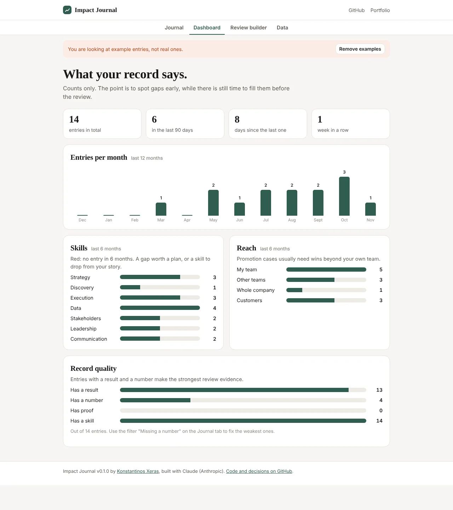

The problem
A brag document helps at review time, but a blank document gets abandoned, and most entries lack the result. The question was what would make people write the line and make it useful later.

What it does
- Journal. One line for what you did, one for what changed, plus type, reach, skills, a number, proof and feedback. Star the best.
- Dashboard. Entries per month, skills covered with gaps in red, reach beyond your team, and record quality.
- Review builder. Self-review by skill, summary by type, ranked CV bullets or a one-page brag document, for any period.
- Data. Backup and restore, CSV, your own skills list, and example entries to try it.
Decisions
Decision
Browser only, no account
Career notes mention colleagues and numbers. They stay on the device, with a backup file to move them.
Decision
Drafts from your own words
No AI writing, so no claim appears that the user did not write. Gaps show as [placeholders].
Decision
Gaps over streaks
The dashboard leads with missing skills and reach, because that is what changes a review.
What I would do next
- Weekly reminders at a time the user picks.
- Suggest entries from a calendar or task tool.
- Optional AI rewording shown as a diff.
No usage data yet, so no findings. The case study lists the measures I would track.